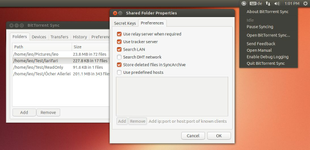

BitTorrent Sync
Dieser Artikel wurde für die folgenden Ubuntu-Versionen getestet:
Ubuntu 14.04 Trusty Tahr
Zum Verständnis dieses Artikels sind folgende Seiten hilfreich:
BitTorrent Sync  ist ein Programm zur automatischen Synchronisation und Verteilung von Dateien zwischen mehreren Geräten mit dem BitTorrent-Protokoll. Das Programm ist plattformübergreifend einsetzbar und über eine einfache Weboberfläche zu bedienen. Informationen zur Lizenz, unter der das Programm genutzt werden kann, sind den Webseiten Terms of Use und Privacy zu entnehmen. Der Quellcode ist nicht verfügbar und eine Veröffentlichung auch nicht geplant.
ist ein Programm zur automatischen Synchronisation und Verteilung von Dateien zwischen mehreren Geräten mit dem BitTorrent-Protokoll. Das Programm ist plattformübergreifend einsetzbar und über eine einfache Weboberfläche zu bedienen. Informationen zur Lizenz, unter der das Programm genutzt werden kann, sind den Webseiten Terms of Use und Privacy zu entnehmen. Der Quellcode ist nicht verfügbar und eine Veröffentlichung auch nicht geplant.
Installation¶
Da das Programm aufgrund der unfreien Lizenz nicht in den offiziellen Paketquellen enthalten ist, muss man zur Installation auf ein "Personal Package Archiv" (PPA) [1] ausweichen oder das Programm manuell installieren.
Hinweis:
Seit Februar 2016 existiert eine Paketquelle, die das unten genannte PPA überflüssig macht. Mehr Informationen sind im Blogbeitrag Official Linux Packages for Sync Now Available  zu finden.
zu finden.
PPA¶
Adresszeile zum Hinzufügen des PPAs:
ppa:tuxpoldo/btsync
Hinweis!
Zusätzliche Fremdquellen können das System gefährden.
Ein PPA unterstützt nicht zwangsläufig alle Ubuntu-Versionen. Weitere Informationen sind der  PPA-Beschreibung des Eigentümers/Teams tuxpoldo zu entnehmen.
PPA-Beschreibung des Eigentümers/Teams tuxpoldo zu entnehmen.
Damit Pakete aus dem PPA genutzt werden können, müssen die Paketquellen neu eingelesen werden.
Nach dem Aktualisieren der Paketquellen können wahlweise folgende Pakete installiert [2] werden:
BitTorrent Sync Arbeitsstations-Version (GUI)¶
btsync-gui (ppa, BitTorrent Sync Arbeitsstations-Version mit grafischer Oberfläche)
 mit apturl
mit apturl
Paketliste zum Kopieren:
sudo apt-get install btsync-gui
sudo aptitude install btsync-gui
|  |
| Verzeichnisse verwalten |
| Einstellungen verwalten |
| Mobilgerät verbinden |
Hierbei handelt es sich um ein Paket, welches BitTorrent Sync in einer typischen Konfiguration für Arbeitsstationen installiert. Nach einem erneuten Anmelden, wird BitTorrent Sync automatisch im Kontext des angemeldeten Benutzers gestartet. Die Benutzeroberfläche orientiert sich an die originale Benutzeroberfläche, die in den Mac OSX und Windows Versionen von BitTorrent Sync bereits enthalten ist und gliedert sich in zwei Bereiche:
Die Statusanzeige stellt den zentralen Zugangspunkt zu BitTorrent Sync dar und gibt über ihr teilweise animiertes Symbol bereits Auskunft über den Status von BitTorrent Sync. Über das Menü der Statusanzeige gerät man ins Applikationsfenster, in dem die synchronisierten Verzeichnisse und die Einstellungen verwaltet werden können.
Im Applikationsfenster stehen alle benötigten Möglichkeiten zur Verfügung, die synchronisierten Verzeichnisse zu verwalten. So können Verzeichnisse hinzugefügt werden, Verzeichnisse gelöscht werden und alle Eigenschaften verwaltet werden. Das Verbinden mobiler Geräte wird durch die Anzeige der Verbindungsdaten als QR-Code unterstützt. Weiterhin können hier auch alle Einstellungen (auch die fortgeschrittenen) verwaltet werden.
Standardmäßig wird der Zugang zur Web UI, die von BitTorrent Sync zur Verfügung gestellt wird, aus Sicherheitsgründen unterbunden. Die GUI stellt jedoch Optionen bereit, den Zugang sowohl auf dem gleichen System als auch von externen Systemen aus zu ermöglichen.
Eine vollständige Beschreibung der Benutzeroberfläche ist auf der zugehörigen Projektseite bzw. im entsprechenden Beitrag im Diskussionsforum zu finden.
Benutzer die von der ehemaligen Arbeitsstations-Version (Paket btsync-user) auf die neue GUI Version aktualisieren, sollten berücksichtigen, dass die Web UI standardmäßig nicht mehr erreichbar sein wird, und eventuell vorhandene Zugangsdaten überschrieben werden. Ist dies nicht gewünscht, so kann jederzeit die GUI Version so konfiguriert werden, dass die Web UI aktiviert ist, auch von anderen Rechnern erreichbar ist und bekannte Zugangsdaten erhält. Um dies zu erreichen, muss BitTorrent Sync erst mal über das Menü beendet werden (falls es schon aktiv ist). Danach können die gewünschten Einstellungen aus einem Terminal Fenster durch Eingabe des folgenden Befehls festgelegt und gespeichert werden:
btsync-gui --webui --bindui 0.0.0.0 --port <gewünschte Port Nummer> --username <gewünschter Benutzername> --password <gewünschtes Passwort> --savedefaults
Im Detail:
Der Parameter
--webuifügt dem Status-Indikator-Menü einen Eintrag zum direkten Aufrufen der Web UI hinzuDer Parameter
--bindui 0.0.0.0weist BitTorrent Sync an, die Web UI an alle internen IP Adressen/Adapter zu binden so dass die Web UI auch von anderen Rechnern im lokalen Netz aufgerufen werden kann.Der Parameter
--port nnnerlaubt es, eine spezifische Port-Nummer für das Web UI anzugeben. Wird dies nicht getan, so wird die Port-Nummer 8999 + uid (bei Systemen mit nur einem Benutzer in der Regel 1000) benutzt.Der Parameter
--username xxxerlaubt es, den gewünschten Benutzernamen für das Anmelden an die Web UI festzulegen.Der Parameter
--password yyyerlaubt es, das gewünschte Passwort für das Anmelden an die Web UI festzulegen.Der Parameter
--savedefaultsweist btsync-gui an, die vorher angegebenen Einstellungen als Standard zu speichern.
Nach einem erneuten Start, werden die Einstellungen aktiv sein.
Die aktuelle Version der Software unterstützt neben einer Englischen Benutzerschnittstelle auch die Sprachen Deutsch, Italienisch, Französisch, Spanisch, Niederländisch, Galisich, Tschechisch, Polnisch, Bulgarisch und Russisch.
Ehemalige BitTorrent Sync Arbeitsstations-Version¶
btsync-user (ppa, ehemalige BitTorrent Sync Arbeitsstations-Version mit Statusanzeige)
mit apturl
Paketliste zum Kopieren:
sudo apt-get install btsync-user
sudo aptitude install btsync-user
| Statusanzeige mit Menü |
Hierbei handelt es sich um ein Paket, welches BitTorrent Sync in einer typischen Konfiguration für Arbeitsstationen installiert. Nach einem erneuten Anmelden, wird BitTorrent Sync automatisch im Kontext des angemeldeten Benutzers mit einer Standardkonfiguration gestartet. Über die Weboberfläche, die sowohl über ein Desktop-Shortcut als auch über das mitinstallierte Applet gestartet werden kann, können geteilte Verzeichnisse verwaltet werden. Jeder Benutzer erhält beim Anmelden eine persönliche automatisch generierte Konfigurationsdatei, so dass die Applikation auch von mehreren Benutzern gleichzeitig (bei schnellem Umschalten zwischen verschiedenen Benutzern) benutzt werden kann. Es besteht dennoch für jeden Benutzer die Möglichkeit, eine eigene Konfigurationsdatei zu erstellen. Weitere Details dazu finden sich im dazugehörigen Forum-Artikel Debian And Ubuntu Legacy Desktop Unofficial Packages For Bittorrent Sync
BitTorrent Sync Server Version¶
btsync (ppa, BitTorrent Sync Server Version)
mit apturl
Paketliste zum Kopieren:
sudo apt-get install btsync
sudo aptitude install btsync
Hierbei handelt es sich um ein Paket, welches BitTorrent Sync in einer typischen Konfiguration für den Betrieb auf Server installiert. In dieser Konfiguration wird der Betrieb von BitTorrent Sync durch klassische Init-Skripts gesteuert, die es erlauben eine oder mehrere Instanzen von BitTorrent Sync als System-Dienst im Hintergrund zu betreiben. Dieses Paket ist nicht auf eine Desktop-Umgebung angewiesen und kann somit auch auf reinen Servern ohne Desktop-Umgebung installiert werden.
Jede Instanz von BitTorrent Sync wird durch eine Konfigurationsdatei im Verzeichnis /etc/btsync definiert. In dieser ist es nicht nur möglich, alle Funktionsparameter von BitTorrent Sync selber, sondern auch einige Umgebungsparameter für den Prozess (wie z.B. Benutzer und Gruppe für den Prozess, "Nice"-Faktor und UMASK) festzulegen. Das Gesamtverhalten bei Systemstart und Systemstop kann standardgemäß in der Datei /etc/default/btsync festgelegt werden.
Darüber hinaus erlaubt das Paket auch die Erstellung einer Standard-Instanz, deren Konfiguration durch den Konfigurationsmanager debconf verwaltet wird. Dies erspart dem Benutzer das lästige und fehlerträchtige Editieren der JSON-Konfigurationsdatei. Bei der Erst-Installation hat der Benutzer die Möglichkeit zu entscheiden, ob eine solche Standardinstanz erzeugt werden soll. Antwortet der Benutzer positiv, wird er durch einen interaktiven Installationsprozess geführt, in dem er grundsätzliche Angaben zum Betrieb der Instanz machen kann. Die Standardinstanz kann jederzeit durch Eingabe von
sudo dpkg-reconfigure btsync
konfiguriert bzw. gelöscht werden. Unabhängig davon, kann der Benutzer weitere Instanzen erzeugen, in dem er entsprechende Konfigurationsdateien unter dem Verzeichnis /etc/btsync anlegt.
Standardmäßig startet das Init-Skript alle durch Konfigurationsdateien definierten Instanzen. Möchte man dies steuern, können weitere Einstellungen in der Datei /etc/default/btsync vorgenommen werden. Weitere Details dazu finden sich im dazugehörigen Forum-Artikel Debian And Ubuntu Server Unofficial Packages For Bittorrent Sync beziehungsweise auf der Projektseite
Die Server Version eignet sich in erster Linie für folgende Benutzer-Szenarien:
BitTorrent Sync wird als Hintergrunddienst benutzt, um auf Servern gewisse Dateibereiche synchron zu halten. So könnten z.B. auf allen Routing/DNS/DHCP Servern einer verteilten Infrastruktur ein PXE Boot-System und verschiedene Konfigurationsdateien durch BitTorrent Sync synchron gehalten.
BitTorrent Sync wird als Hintergrunddienst benutzt, um auf einen Server eine immer verfügbare weitere/externe Kopie der synchronisierten Daten zu halten.
Firmen bauen sich eigene Dienste, die auf BitTorrent Sync basieren. Diese benötigen speziell konfigurierte BitTorrent Sync Kerne die im Hintergrund auf Servern laufen.
Manuell¶
BitTorrent Sync kann auch direkt von der Homepage des Anbieters heruntergeladen werden. Dort klickt man auf Download und wählt je nach eigener System-Architektur Linux i386 oder Linux x64 aus. Die heruntergeladene .tar.gz-Datei wird in einen beliebigen Ordner extrahiert [3]. Empfehlenswerte Ordner sind ~/bin/ im Homeverzeichnis oder bei systemweiter Nutzung /usr/local/bin. Enthalten ist neben der Programmdatei btsync nur noch eine Textdatei mit Lizenzinformationen (siehe oben).
Bedienung¶
BitTorrent Sync kann mit dem Befehl
btsync [OPTIONEN]
gestartet [4] werden. Die Angabe von Optionen ist nicht zwingend erforderlich. Die vorhandenen lassen sich mit dem Befehl:
btsync --help
anzeigen. Wer möchte, kann sich auch einen Programmstarter [5] erstellen.
Die Bedienung bzw. Konfiguration des Programms erfolgt über eine englischsprachige Weboberfläche. Diese erreicht man in einem Webbrowser über die Adresse http://IP-ADRESSE:8888/gui oder http://localhost:8888/gui (letztere gilt nur auf dem eigenen Rechner).
Um Dateien aus einem Ordner des Gerätes zu synchronisieren bzw. zu verteilen, klickt man auf der Weboberfläche auf "Add Folder". Dann klickt man neben dem Feld "Secret" auf "Generate", wodurch ein zufälliger, 32-stelliger Schlüssel erzeugt wird. Auch die Eingabe eines individuellen Schlüssels ist möglich. Anschließend wählt man im unteren Bereich das für die Synchronisierung bzw. die Freigabe gewünschte Verzeichnis aus oder trägt den entsprechenden Pfad im Feld "Path" ein.
Diese Prozedur wiederholt man auf allen Geräten, mit denen Dateien synchronisiert werden sollen. Auf den anderen Geräten lässt man sich jedoch keinen neuen Schlüssel generieren, sondern gibt den zuvor erzeugten Schlüssel ein.
Nur-Lese-Zugriff¶
Wer einer anderen Person den Zugriff auf die Dateien in einem Verzeichnis, jedoch keine Schreib- oder Lösch-Rechte hierfür erlauben möchte, der kann der anderen Personen einen so genannten "Nur-Lese-Schlüssel" geben. Diesen erhält man nach der vorgenannten Konfiguration über die Weboberfläche durch einen Klick auf das Symbol für die Einstellung (Zahnrad-Symbol) neben dem gewünschten Verzeichnis. Dann bekommt man sowohl den normalen Schlüssel als auch den "Nur-Lese-Schlüssel" angezeigt.
Einmal-Schlüssel¶
Wer einer Einzel-Person Zugriff auf die Dateien in einem Verzeichnis, jedoch keine Weitergabe dieses Schlüssels an weitere Personen erlauben möchte, der kann für die jeweilige Person einen nur einmal gültigen Schlüssel erzeugen. Diesen erhält man nach der vorgenannten Konfiguration über die Weboberfläche durch einen Klick auf das Symbol für die Einstellung (Zahnrad-Symbol) neben dem gewünschten Verzeichnis. Hier kann man im Bereich "One-time secret" einen entsprechenden Schlüssel generieren lassen, indem man neben dem dortigen Feld auf "Generate" klickt, wodurch ein zufälliger, 32-stelliger Schlüssel erzeugt wird. Zuvor kann man auch auswählen, ob mit diesem Schlüssel ein Lese- und Schreib- oder nur ein Lese-Zugriff möglich ist.
Soweit ersichtlich, ist dieser Schlüssel nur 24 Stunden gültig und verfällt danach automatisch. Der Empfänger sollte also nicht allzu lange mit der Verwendung warten.
Autostart¶
Zumindest bei der Installation via oben angegebener PPA wird das Programm automatisch zu den Autostartprogrammen hinzugefügt. Wer das nachprüfen möchte, startet das Programm "Startprogramme" und hält dort nach BitTorrent Sync Ausschau.
Ansonsten kann man das Programm auch automatisch nach der Anmeldung auf der grafischen Oberfläche starten. Details sind im Artikel Autostart zu finden.
Konfiguration¶
Eine eigene Konfiguration lässt sich verwirklichen, in dem man mit dem Befehl:
btsync --dump-sample-config > ~/btsync.conf
eine Konfigurationsdatei erzeugt, diese nach Wunsch mit einem Editor [7] bearbeitet und beim Programmstart übergibt:
btsync --config /PFAD/ZU/btsync.conf
Über diesen Weg kann man beispielsweise den Zugang zur Weboberfläche mit einem Kennwort schützen. Eine Beispieldatei:
{
"device_name": "My Sync Device",
"listening_port" : 0, // 0 - randomize port
/* storage_path dir contains auxilliary app files
if no storage_path field: .sync dir created in the directory
where binary is located.
otherwise user-defined directory will be used
*/
"storage_path" : "/home/user/.sync",
// uncomment next line if you want to set location of pid file
// "pid_file" : "/var/run/btsync/btsync.pid",
"check_for_updates" : true,
"use_upnp" : true, // use UPnP for port mapping
/* limits in kB/s
0 - no limit
*/
"download_limit" : 0,
"upload_limit" : 0,
/* remove "listen" field to disable WebUI
remove "login" and "password" fields to disable credentials check
*/
"webui" :
{
"listen" : "0.0.0.0:8888",
"login" : "admin",
"password" : "password"
}
/* !!! if you set shared folders in config file WebUI will be DISABLED !!!
shared directories specified in config file
override the folders previously added from WebUI.
*/
/*
,
"shared_folders" :
[
{
// use --generate-secret in command line to create new secret
"secret" : "MY_SECRET_1", // * required field
"dir" : "/home/user/bittorrent/sync_test", // * required field
// use relay server when direct connection fails
"use_relay_server" : true,
"use_tracker" : true,
"use_dht" : false,
"search_lan" : true,
// enable sync trash to store files deleted on remote devices
"use_sync_trash" : true,
// specify hosts to attempt connection without additional search
"known_hosts" :
[
"192.168.1.2:44444"
]
}
]
*/
// Advanced preferences can be added to config file.
// Info is available in BitTorrent Sync User Guide.
}Links¶
BitTorrent Sync
- Offizielle Internetpräsenz von BitTorrent Inc.FAQ
- häufig gestellte Fragen und AntwortenInoffical FAQ
- inoffizielle FAQ ListeUser Guide
 (PDF-Format)
(PDF-Format)Debian And Ubuntu Legacy Desktop Unofficial Packages For Bittorrent Sync
Debian And Ubuntu Server Unofficial Packages For Bittorrent Sync
Projektseite des Benutzeroberflächen und Packaging Projektes
GitHub Repository des Benutzeroberflächen und Packaging Projektes
Howto Install BitTorrent Sync From Its Official Repository
- Blogbeitrag, 02/2016Die Cloud Alternative für Linux: Bittorrent Sync
- Pro-Linux, 12/2013BitTorrent Sync
- Blogbeitrag mit interessanten Hintergrundinformationen, 05/2013Blogbeitrag über btsync-gui
, 03/2014
- Erstellt mit Inyoka
-
 2004 – 2017 ubuntuusers.de • Einige Rechte vorbehalten
2004 – 2017 ubuntuusers.de • Einige Rechte vorbehalten
Lizenz • Kontakt • Datenschutz • Impressum • Serverstatus -
Serverhousing gespendet von